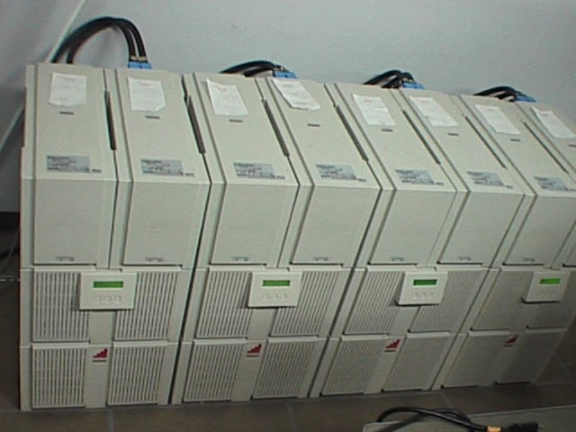
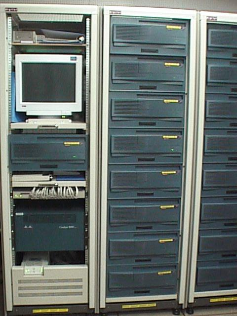

| Processor | 333MHz Alpha 21164 |
|---|---|
| #PE | 32 (+1) |
| Memory | 512MB(8PE), 256MB(8PE), 128MB(16PE) |
| Cache | L1: 8KB, L2: 96KB, L3: 2MB |
| Network | Fast Ethernet 100Base TX |
| Switch | 1.2Gbps backplane |
| OS | Digital UNIX 4.0D |
| Software | NFS/MPI/PVM Load Monitor |
|
UPS  |
Host machine & Switch  |
| 4-byte latency | 142 usec. |
|---|---|
| Maximum throughput | 10.7 MB/s |